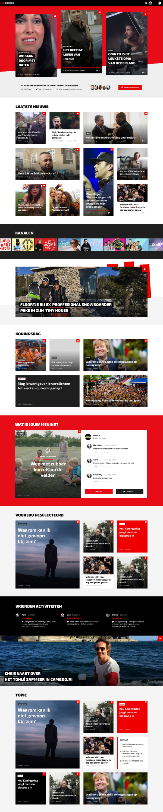

A new online strategy for Netherlands’ largest broadcasting association
When BNN and VARA merged in 2014 to form the largest public broadcasting organization in the Netherlands (BNN-VARA), both the BNN and VARA brands would continue to exist. For the combined brand a new corporate story was written.
In 2017 it was decided the BNN and VARA brands would merge into BNNVARA (notice the lack of a hyphen). Because of the corporate nature of the current brand story, a new, more fitting identity had to be created.
This marked the beginning of the company's largest clean up operation ever. It also meant that, as we were going to touch all brand outings, I had the opportunity to audit the entire catalog and come up with a new digital strategy more fitting with the changing way people consume media.
The challenges
- Take BNNVARA's mission to create positive social impact and find a way to enable the audience to ‘participate’ with the brand in an online environment
- Move the company into a new, more digital first direction, facilitating an easy to consume and diverse media experience while creating more brand awareness
The team
This project was a huge undertaking. It was very much a multidisciplinary effort, meaning I had to collaborate intensively with several members of the marketing team, developers, product owners, product management and the head of Digital. During the buildup I worked together with our junior UX/UI designer to design the first version of bnnvara.nl, working on research and interaction design as well as mentoring in product design.
For the bulk of the project we enlisted the help of a UI designer with who I worked closely together. With him focusing on UI design, I focused on user research, design strategy, ideation, testing and iterating on the second version of bnnvara.nl.
The buildup
Within the short timeframe between the announcement of BNN and VARA being merged and the public unveiling, bnnvara.nl had to be designed and built. This called for a very pragmatic approach. Revisiting insights from research I had done previously for bnn.nl and vara.nl and verifying them with members of both associations.
I then did a quick analysis of the similarities to gather insights that we could use as input for writing some quick persona’s and drawing up a crude user journey. Based on this bnnvara.nl was designed, built and launched within six weeks; a valiant effort. From then on, all traffic from both bnn.nl and vara.nl would be directed to the new domain.
Laying a foundation
Now that the new website was up and running for a few months we could take some time to learn more about our audience and their experience. Not only that; this was also a great opportunity to ask about their media consumption, competitors, etc.
A survey was conducted among members, resulting in 755 respondents. Giving us plenty of insights to improve.
Iterate & test
After the survey results were in we felt we needed to dive much deeper into the wants and needs of our audience.
I provided our junior UX designer with the survey feedback along with analytics and Hotjar data, and he set out to create a new iteration of bnnvara.nl.
To test the new concept we invited 5 people in for an hour long interview and user test. A few iterations later we had a new design that could be implemented and launched a few months later.
A new direction
Due to the changing nature of the Dutch public broadcasting system, I felt that it was time to think about how BNNVARA could measure up in the digital media landscape of the future. The strategy had remained the same for years: ‘We send, you consume’.
With the multitude of other media outlets popping up as well as social media taking a piece of the pie, for me there was a sense of urgency. NPO was launching a more ‘hostile’ strategy towards broadcasters’ usage of online materials, as well as the usual budget cuts. I urged our head of Digital to let me investigate a new direction.
Workshops galore
In order to try and convince everyone of the value of this investigation I instigated a few workshops, like story and impact mapping. In return these workshops would provide me with valuable business direction and a shared mental model.
Facilitating these workshops greatly helped in getting my efforts put on the roadmap. It also made pinpointing areas where I needed to get deeper insights and understanding a lot easier.
Moving the design forward
Parallel to these workshops I continued to draw up a picture of the new bnnvara.nl. I came up with the idea of an ecosystem. All of BNNVARA’s programs had their own websites as well as branding. We were trying to instigate cross-navigation and consumption, but we weren’t facilitating it. My hypothesis was as follows:
Centralizing all of BNNVARA’s programs in one ecosystem would encourage cross-navigation and improve audience retention, visit duration and page view amounts
In an effort to create more brand awareness for BNNVARA I felt it would be wise to try and see in which way we could house all programs on BNNVARA.nl. After some semi-successful experimenting and discarding a boatload of ideas I focused in on the concept that I felt had the most potential.
Taking inspiration from apps like YouTube and Netflix and the way they use recommendations and related content, we could do similar things with the huge amount of varied content of all programs including different types of video, articles and audio.
I decided to test the concept of ‘channels’ (similar to those found on YouTube) and see whether this could work for us. All editors could still create their content in the same way, only publishing it online would be done in a different, more generic way.
Validating the concept
Based on my previous research and the new concept I created personas that would serve as actors in a design sprint I facilitated to help validate the concept. The goal of the sprint was to find out how we might get people to consume more BNNVARA content across multiple programs.
The results of the prototype test were moderately positive, but they did provide us with a LOT of insights and patterns that could help us towards our goals of getting people into a ‘content loop’.
Scoping down
The ambition of the concept was high. We had ideas for gamification, membership tiers, building a large online community and a recommendation engine. We decided to scope out the first three for now to focus our efforts on getting the recommendations right and learn as we go. Our research had indicated that this would create the most amount of impact with the least amount of effort. I ended up mapping out the concept including the community part in order to create more context for stakeholders and developers.
Wireframes & mockups
During ideation a lot of sketching and quick wireframing was done, so we had a good overview of how the design should be shaped up. I proceeded to iterate on a few wireframe concepts and guerilla test them with stakeholders as well as people on the street.
When we had processed all the feedback, we created a mockup. It combined results of UI design explorations our UI designer had done in order to best keep with the brand story.
Wrapping up
The bulk of our design work for this project was now done and ready for implementation by the development team. While we were designing, they were working hard to get our infrastructure ready and getting rid of a lot of technical debt. The decision to move forward with this project also meant a new technical architecture would have to be set up.
During this process there were a lot of development setbacks, which caused the first release of the new website to be delayed to early 2019, over four months after I had left BNNVARA. It’s a shame that I didn’t see all my efforts come to life during my time at BNNVARA, but I’m very proud of what I’ve achieved. The project was a massive undertaking, but very educational indeed.
Lessons learned
- This project was extremely ambitious and I had to call upon a wider skill set than I imagined having. Through improvisation and sometimes accepting my shortcomings, I was able to come up with solutions for most challenges.
- The new strategy also called for a new technical infrastructure and architecture. This was expected, but the implementation took so much longer than we had hoped. I sometimes caught myself getting impatient. I took this time to do more prototyping to help development along once they were ready.
- The more we tested, the more design sped up. Another great testimony for design thinking.
- Because development took longer than expected, I was able to use some of the constructs and insights we gathered in other projects successfully, validating our choice of direction.
- I learned the hard way that politics are an integral part of design strategy. I also found out how difficult it can be to convince people of the value of your efforts. It’s hard work!